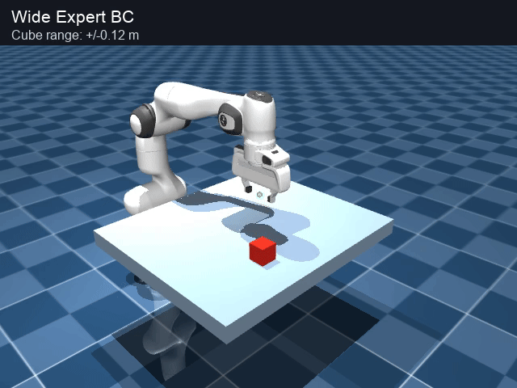
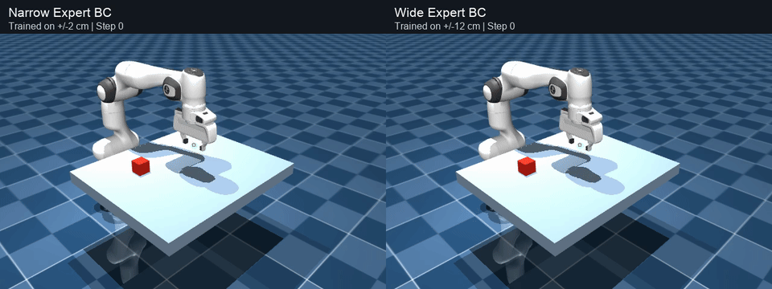
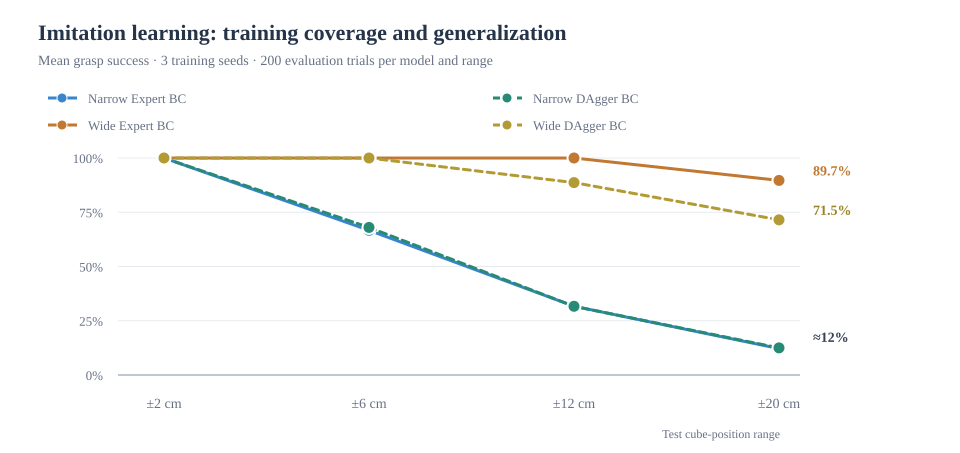
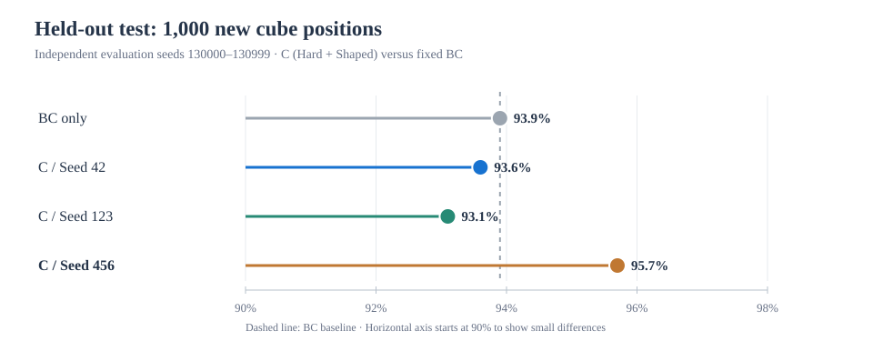

Problem
Noisy cube-position estimates can cause grasp failures. Observation noise may change during a grasp.
Action Chunking and Noise-Aware Replanning

I studied how a Franka Panda robot can grasp objects reliably while adapting to changing observation noise. Across 81,000 evaluation episodes in MuJoCo, four-action behavior cloning improved grasp success from 83.42% to 94.37%. With frozen policies, longer execution reduced model calls, and noise-aware replanning improved success without retraining. Under changing noise, Kalman Online achieved 92.07% success versus 90.58% for one-shot adaptation (+1.48 percentage points). These results demonstrate a benefit of adaptive execution in a controlled simulation, not yet on physical robots.
Noisy cube-position estimates can cause grasp failures. Observation noise may change during a grasp.
Adapt when to replan: execute longer action sequences when observations are reliable, and replan more frequently when uncertainty rises.
Illustrative schedule, not a measured trajectory.
pp = percentage points; BC = behavior cloning.
Four successive studies isolate learning, execution frequency, and adaptation to constant and changing noise.
B–D reuse three frozen H4 policies (training seeds 42, 123, 456), with matched initial positions within each study. C–D use synthetic observation noise. The 81,000 episodes are the main A–D evaluations, not independent training runs or the total of all earlier studies.
Before A–D, I compared narrow and wide expert demonstrations and a single round of DAgger (labeling states visited by the learned policy with expert actions).


| Training condition | Success at ±20 cm |
|---|---|
| Narrow Expert (±2 cm) | 12.2% |
| Narrow DAgger | 12.5% |
| Wide Expert (±12 cm) | 89.7% |
| Wide DAgger | 71.5% |
Wider expert demonstrations improved generalization; one round of DAgger did not outperform additional expert data in this setup.
I froze a strong BC policy and trained SAC to correct XYZ by up to ±5 mm per axis, leaving the gripper under BC control. Corrections sometimes rescued grasps but also introduced failures. A selected checkpoint improved from 93.9% to 95.7% on an exploratory 1,000-position test, while two other seeds performed worse.

Spatial gates did not reliably transfer across seeds; policy-specific gates often abstained. A preregistered ten-seed replication did not establish a reliable benefit from stronger residual regularization. With action-chunked BC, SAC increased mean success from 94.37% to 95.33% but did not reliably provide a greater benefit than with H1. I therefore focused on the learned base policy and execution timing.
The later A–D studies use separately trained action-chunking models and temporally intact demonstrations; their rates should not be directly equated with the earlier experiments.
Learn actions from expert demonstrations using a state-based MLP. H1 predicts one action; H4 predicts four consecutive actions. Each executes its full prediction before observing and replanning.
H1 and H4 are trained separately using the same source episodes. H4 also has a larger output head and future-action supervision.
Reuse the same frozen H4 policy. R1, R2 and R4 each predict four actions but execute only the first one, two or four before using a new observation to predict again. This isolates execution frequency from training.
Test Gaussian observation noise with standard deviation (SD) of 0, 5 or 10 mm. Estimate SD using the sample variances of the stationary cube's XY observations during a 20-step R4 warm-up.
R4 was better on average at 0 and 5 mm; R1 was better at 10 mm. The 7.5 mm threshold was selected on separate calibration data and frozen before final evaluation.
Noise changes once at step 40, either from 0 to 10 mm or from 10 to 0 mm. Both adaptive controllers start with R4 and use the same Kalman-based estimator over the previous 20 observed XY positions.
Estimate once at step 20 and keep the chosen interval until the episode ends.
Estimate at step 20 and every 4 steps through step 80; then hold the last interval.
Initially choose R4 if estimated SD ≤ 7.5 mm; otherwise R1. Later, switch R4 to R1 above 8.5 mm and R1 to R4 below 6.5 mm. This hysteresis discourages repeated switching near the threshold.
Neither controller receives true noise, change time or grasp outcome. The Kalman estimator uses a constant-velocity motion model and innovation likelihood, allowing estimation during motion under model assumptions. Noise-estimation checks do not guarantee a switch.
+10.95 pp grasp success with four-action BC.
3 training seeds; 2,000 matched positions per trained model. H1/H4 differ in training targets and output size as well as execution; B isolates execution.
+5.73 pp success and 75.3% fewer BC calls (R4 vs. R1).
Same three frozen H4 policies, 18,000 trials. BC inference calls are not equivalent to total runtime. Gains varied substantially by training seed.
Adaptive overlaps R4 at 0 and 5 mm. Vertical axis spans 80–95% to show the differences.
| Noise SD | Fixed R1 | Fixed R4 | Adaptive |
|---|---|---|---|
| 0 mm | 87.77% | 93.60% | 93.60% |
| 5 mm | 89.23% | 90.17% | 90.17% |
| 10 mm | 88.43% | 84.83% | 87.87% |
| Mean | 88.48% | 89.53% | 90.54% |
+1.01 pp vs. fixed R4 (paired 95% CI: +0.54 to +1.50 pp).
Adaptive preserved R4's clean and moderate-noise results while recovering some high-noise failures. At 10 mm it still trailed fixed R1; noise estimation alone does not guarantee the best action interval.
27,000 trials · Experiment report · Estimator and paired-outcome details
3 policies × 2 profiles × 4 controllers × 1,000 positions = 24,000 episodes.
| Controller | 0 → 10 mm | 10 → 0 mm | Mean |
|---|---|---|---|
| Fixed R1 | 87.40% | 93.23% | 90.32% |
| Fixed R4 | 87.63% | 93.73% | 90.68% |
| Kalman OneShot | 87.63% | 93.53% | 90.58% |
| Kalman Online | 89.33% | 94.80% | 92.07% |
The prespecified primary contrast uses unrounded success rates, rather than subtracting rounded table entries.
Gain in grasp success (pp).
| Training seed | 0 → 10 mm | 10 → 0 mm |
|---|---|---|
| 42 | +0.8 | +1.7* |
| 123 | +3.4* | +0.7 |
| 456 | +0.9 | +1.4* |
All six gains were positive; three remained significant after Holm correction.
* Adjusted p < 0.05 in paired exact McNemar tests. These comparisons condition on three trained policies, not a population of future training seeds.
Online vs. OneShot: 6,000 matched episode pairs.
Online improved net grasp outcomes but increased measured episode runtime slightly. Wall-clock timings are descriptive simulation measurements, not real-robot speed claims.
Audited data & statistical results · Full online adaptation results
Limitations: Three frozen H4 policies, one simulated cube-grasping task, numeric state inputs and synthetic independent Gaussian observation noise. Paired position-level intervals do not establish generalization to new training seeds, cameras or hardware.
Detailed experimental archive · Research repository, code and data